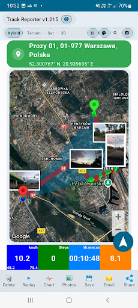

GUIDE • SITE INSPECTIONSHow to Create a Site Inspection Report with GPS Photos and PDF
Create professional site inspection records using GPS routes, location-tagged photos and PDF reports. Follow the practical Android workflow and view real screenshots.
Read the guide